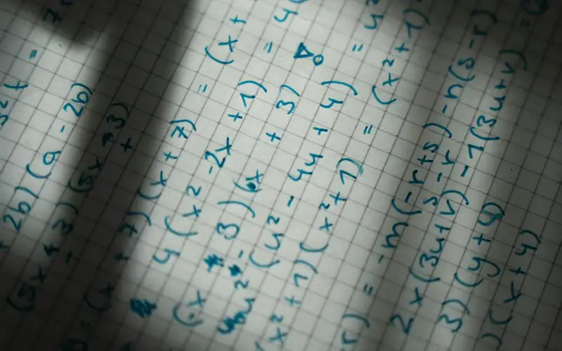
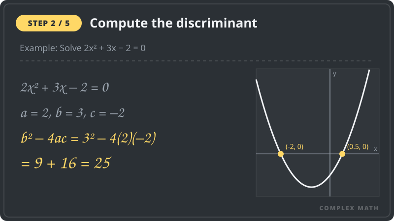
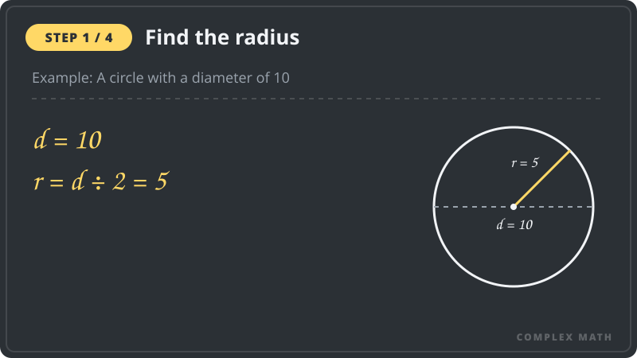
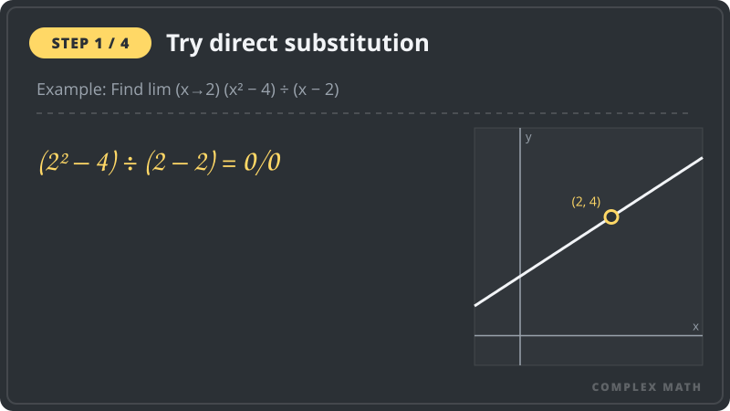

Complex Math: step-by-step guides to the formulas you'll use in algebra, geometry, and calculus
Stuck on a formula? Walk through it one step at a time.
Pick a TopicTopics
Pick a Topic
This site is here to help you understand the math, not just memorize it. Flip a card to preview the formulas in each topic.

Algebra
Solve for the unknown
Algebra
- Loading formulas…
Geometry
Measure shapes and space
Geometry
- Loading formulas…
Calculus
Study change and area
Calculus
- Loading formulas…
How it works
One Step at a Time
Every formula page works the same way.
-
Open a formula
Each topic page lists its formulas on the side. Pick one and it opens right there. The list stays in view, so you can switch at any time.
-
Click through the example
Use Next and Back (or your arrow keys). Every slide shows exactly what changed, so you never wonder where a number came from.
-
Keep your notes
Write as many notes as you like under any formula. They're saved in your browser, so you can review them all on the My Notes page before a test.
Common mistakes
Where Students Get Stuck
The three mistakes we see most often, and how each lesson helps you avoid them.
-

When c is negative, −4ac becomes positive. Students who drop that sign get the wrong discriminant, and then both answers are wrong. Our example walks through the signs one at a time.
-

Circle formulas use the radius, r. If a problem gives you the diameter, cut it in half first. It is the single most common mistake on circle problems.
-

Calculus
Thinking 0/0 is the final answer
Getting 0/0 from a limit doesn't mean the answer is zero or undefined. It is a signal to simplify. Factor, cancel, and then substitute again.